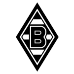
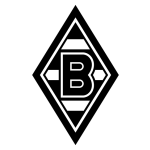
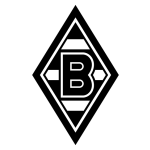
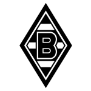

Union Berlin face Borussia M'gladbach at Stadion An der Alten Försterei on Saturday looking to secure a first win in 11 Bundesliga games.
Union Berlin have lost nine and drawn one matches since they last earned three points – against Darmstadt 98 on August 26.
They face a Borussia M'gladbach side who have won four and drawn three over that time.
Union Berlin are bottom of the table after 12 games, of which they have won two and drawn one, earning seven points.
Borussia M'gladbach are eight places ahead of the hosts in 10th, with four wins and four draws putting them on 16 points.
With 12 goals in 12 games so far this season, Union Berlin are the league's joint-third-lowest scorers with 1.0 goals per game. And they are conceding more than average, letting in 27 goals at a rate of 2.2 per game.
The away team, meanwhile, are above average scorers, with 2.1 goals per game, compared to a league average of 1.7. They have conceded 2.2 goals per game.
In the last three years, Union Berlin and Borussia M'gladbach have played each other on five occasions. Union Berlin won four of them and they drew once.
On average, Union Berlin scored 1.6 goals and Borussia M'gladbach 0.8 in those matches.
Their last meeting was on April 23, when Union Berlin won 1-0 away.
Union Berlin's last match was on November 25, a 1-1 draw against Augsburg, with Kevin Volland getting the goal for Union Berlin.
Borussia M'gladbach beat Hoffenheim 2-1 last time out, on December 2, with Alassane Pléa and Nathan Ngoumou on the scoresheet.